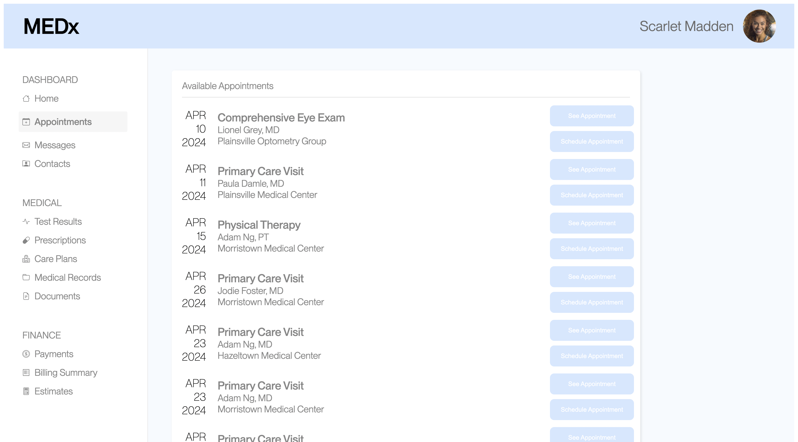
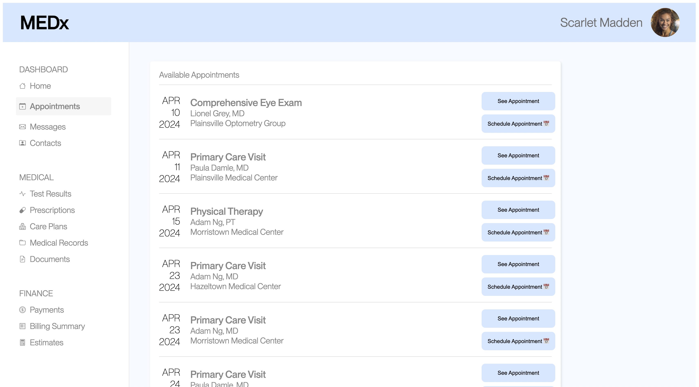

Welcome to my A/B testing analysis! For this assignment, I was tasked with modifying a given website. Then, based on collected user data, I compared the before (Interface A) with the after (Interface B) using statistical tests. Using these statistical tests, I then concluded whether there was a difference in user interactions from Interface A to Interface B and whether these indicated which interface was more effective.
In order to analyze user reponses to interface changes, I had to first change the interface! For my interface B, I changed the font color of the "Schedule Appointment" and "See Appointment" buttons to black, added dividers between the listed appointments, and sorted the appointments with ascending dates.
Interface A:
Interface B:
In order to analyze the effectiveness of Interface B, I created a null and alternative hypothesis for 3 different data types. The 3 data types I chose to analyze were misclick rate, time on page, and time to first click. Below the null hypothesis is a prediction of whether I think we will reject or fail to reject the null hypothesis. Below the altnerative hypothesis is a short reasoning of why I chose the alternative hypothesis I did.
To compute the metrics, I used the following formulas and calculated them using Google Sheets:
This gave me these results:
| Interface A | Interface B | |
|---|---|---|
| Misclick rate | 0.5 | 0.0 |
| Time on page (milliseconds) | 36139.45833 | 9567.36 |
| Time to first click (milliseconds) | 14476.875 | 6512.84 |
Misclick rate: For this metric, I chose to do a chi-squared test. I chose this test because I wanted to compare the frequency of TRUE vs FALSE values, which are categorical.
Results of chi-squared test:
Because p-value < 0.05, the difference in misclick rate between versions A and B is statistically significant. Based on the calculated p-value, there is about a 0.005% chance the groups are actually the same. Now that we are confident that our groups are not the same, we can look more closely at the difference in misclick. We see that the misclick rate decreased from 0.5 on Interface A to 0.0 on Interface B. Given that are difference is statistically significant, we observe that misclick rate did decrease from version A to B.
Conclusion: We find statistically significant evidence that the alternative hypothesis is true.
Time on page: For this metric, I chose to do a one-tailed t-test. This is because time is a continuous value, which implies the use of a t-test. Then, I chose a one-tailed t-test because I wanted to determine which interface had a shorter time on page.
Results:
Because p-value < 0.05, the difference in the time on page per user between versions A and B is statistically significant. Additionally, we see that the t-score is negative, indicating a decrease in time on page from version A to B. This is confirmed by observing a decrease in average time on page in the metrics caluclated above. Therefore, we observe a decrease in time on page that is statistically significant.
(Note: In the Google Sheet provided to calculate a one-tailed t-test, I input my data from Interface B into the column that said "Sample A" and vis versa for Interface A. I did this because I wanted to get p-value (B < A)).
Conclusion: We find statistically significant evidence that the alternative hypothesis is true.
Time to first click: For this metric, I chose to do a one-tailed t-test. This is becuase time is continous and I wanted to compare magnitudes of time, like in the previous metric.
Results:
Because p-value < 0.05, the difference in time to first click between versions A and B is statistically significant. We also observe that the t-score is negative, which indicates a decrease in time to first click from version A to B. Like in time on page, we can also confirm this difference in seeing the decrease in the average time to first click metric from A to B computed in the above section. Thus, we have observed a decrease in the time to first click that is statistically significant.
Conclusion: We find statistically significant evidence that the alternative hypothesis is true.
In addition to the statistical tests above, we can also examine some more strightforward statistics. Above, in the "Computing the Metrics" section, we already calculated the averages of time on page and time to first click above for Interface A and Interface B. For both of these metrics, we see that the average time decreased from Interface A to Interface B, which is consistent with the results of the statistical tests. Furthermore, we can calculate the median of time on page and time to first click:
| Interface A | Interface B | |
| Time on page (milliseconds) | 36748.5 | 8845 |
| Time to first click (milliseconds) | 12491.5 | 6025 |
The median for both time on page and time to first click decreased from Interface A to Interface B. Based on these observations of mean and median, we can support our conclusions from the statistical tests that these metrics decreased from version A to B. Since did_misclick is not a continuous feature, it would not make much sense to calculate an mean or median. Instead, we can simply observe that misclick rate decreased from 0.5 to 0.0.
I collected 24 data points on Interface A and 25 data points on Interface B. Since the amount of data points are very close, I feel comfortable comparing the two groups. However, in an ideal study, the amount of data points would be larger in order to ensure the study encompasses different user groups.
As I predicted, I ended up accepting the alternative hypothesis for each of the metrics: misclick rate, time on page, and time to first click. A decreased misclick rate, time on page, and time to first click indicate that Interface B was easier to evaluate, its buttons were more easily identifiable, and the user was more quickly able to select the specified button. These signs lead me to believe that my Interface B was more effective than the original Interface A, and the changes I made improved the efficiency and flow of the webpage. Yay!